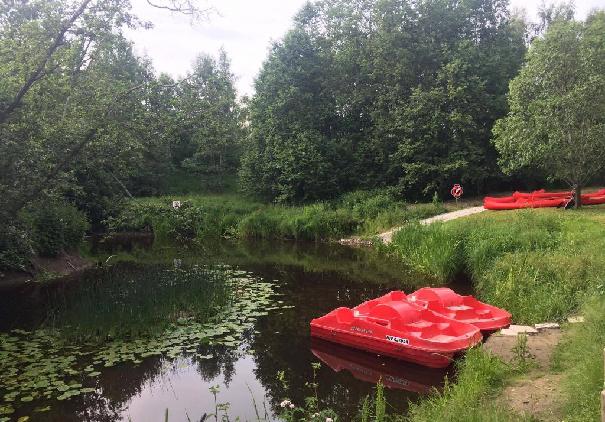
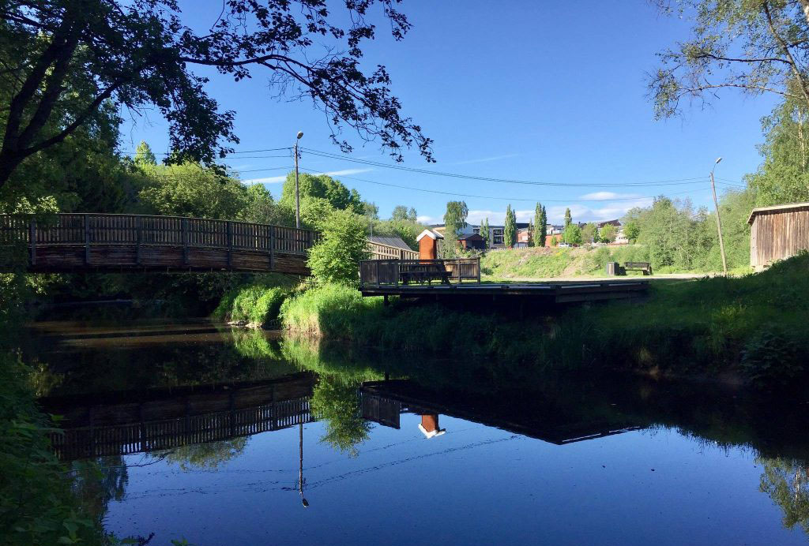
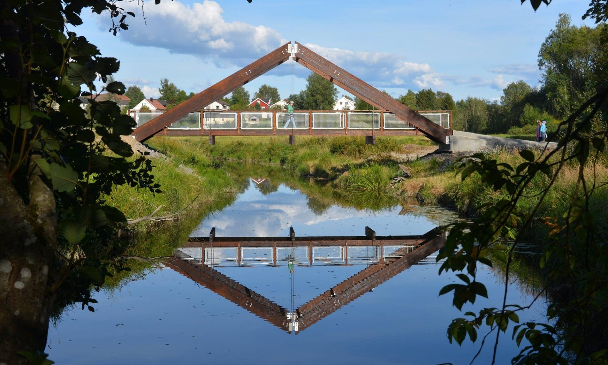

Områder rundt Mysenelva

Mysenelva, en del av Hæravassdraget, renner tett inntil Mysen by fra Susebakkefossen i øst til Spinnerifossen i vest. Fra Susebakkepølen til Kloppa, en strekning på drøyt 3 km. er det opparbeidet og anlagt en sti langs elva. Stien har fått navnet Helsestien og er tilknyttet en rundløype om Høytorp Fort. Hele traseen er ca. 6,5 km. Helsestien langs Mysenelva er tilgjengelig for alle, også bevegelseshemmede, d.v.s. at den er fremkommelig med rullestol. Det er bygget 2 flotte bruer og 2 brygger. I løpet av 2019 ferdigstilles lys på hele strekningen. Ellers finnes 10 sitte-/raste-/grillplasser som alle turgåere kan benytte. På to forskjellige steder er det montert ulike treningsapparater til fri benyttelse. Kanoer og tråbåter er tilgjengelig for gratis utlån.

Helsestien egner seg godt for turgåing, trimming/trening, sykling, rekreasjon og fisking langs elvebredden. Helsestien langs Mysenelva er blitt et særdeles populært objekt i Mysen. Ikke bare folk fra Mysen og Eidsberg benytter seg av stien, men fra hele regionen og mer enn det.

Helsestien langs Mysenelva er opparbeidet og anlagt av Mysenelvas Venner som ble stiftet 30. juni 2011. Alt arbeid, bortsett fra bygging av bruene, er utført som ulønnet dugnadsarbeid med økonomisk støtte fra banker, fond, stiftelser, lag og foreninger, Østfold Fylkeskommune og private. Vi ønsker alle en riktig god tur i flotte omgivelser. Mysenelvas Venner